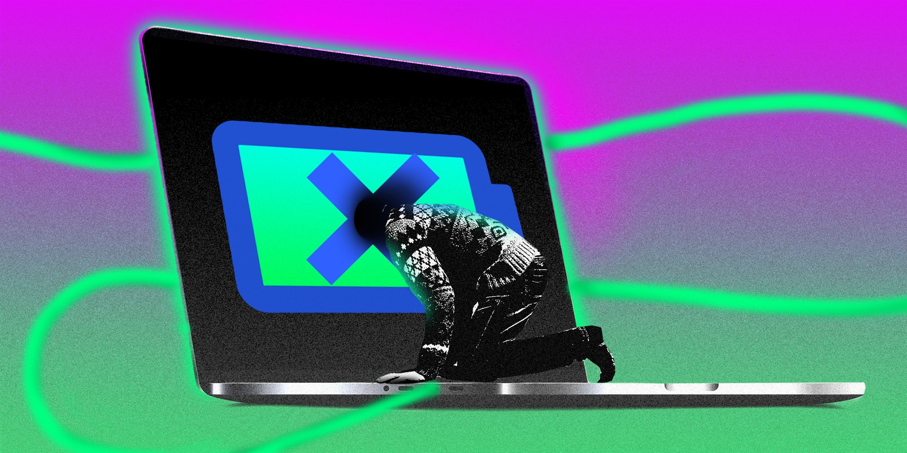
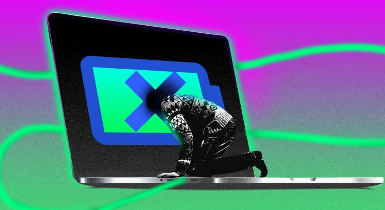
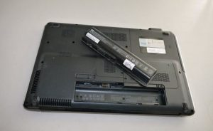
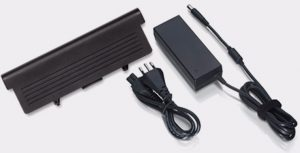

Why is My Laptop Battery Not Charging?

If you have plugged in your laptop but it’s not charging, there is definitely something wrong.At times, the battery is fully drained, which provides no power to the device.But if you have connected the adapter but there is no glowing light, no bright display, or no charging indicator, you should take a few steps to diagnose the problem.In this article, we are going to share with you a few tips to help you troubleshoot.Read on.
1.Make sure You are Plugged In
First of all, make sure that the laptop is plugged in.Also, check to make sure that the plug is properly seated.All the removal cords should be fully inserted and the battery should be seated properly.
2.Remove the Battery
If your laptop has a removable battery in it, take it out.Now, press and hold the power button for a couple of seconds.The idea is to drain the device completely.Afterward, plug in the device and switch on the laptop.
This trick should work properly.But if it doesn’t, chances are that you have a bum battery that has to be replaced.
3.Use the Right USB-C Port
Today, USB-C is a standard connector for a lot of devices.It helps connect peripherals transfer data and recharge batteries.If you have a non-charging issue, check to see if you are not connected to the wrong port.
CONNECTOR
4.Use a powerful charger
If the adapter is not powerful enough, it won’t charge your laptop battery.The wattage of the charger should be checked.Although a low-wattage charger may keep the battery from draining, it won’t be powerful enough to charge it.
5.Check for Shorts, burnouts, and breaks
Check the cable for any breaks or kinks.The ends should have no broken connections.Sometimes, pets chew on adapter cables.The AC brick shouldn’t be discolored and no parts should be expanded or warped.Also, sniff the AC brick to ensure it doesn’t smell as if the plastic is not burnt.If it smells like this, you should try replacing the power connector.
6.Check the Connector
Make sure that the connector is fairly solid.There should be no dirt or dust in the jack.You can use a toothpick to clean the jack and plug it in once again.In some cases, the jack is loose or wobbly, which means that the jack is broken and needs to be repaired.
CONNECTOR
7.Beat the Heat
Batteries tend to overheat.When the temperature exceeds a certain limit, the sensor may misfire.This may cause charging issues as well.Typically, these problems are quite common in older laptops as they have a low-quality cooling system.
In this case, you should turn the device off and wait for a while to let the battery cool down.Also, make sure that the air vents are not clogged.
8.Change the Battery
If none of the tricks solve the problem, we suggest that you purchase a new power adapter or battery.It’s better that you buy the battery from a reputable manufacturer.Using third-party batteries is not recommended.
In short, if your laptop battery is not charging, you can use these tips to troubleshoot and fix the problem.
RB:
If your laptop battery is bad, you should get a replacement battery.At replacement batteries, you can find a great collection of laptop batteries.This will help you make the best choice.
Share on Facebook Tweet Follow us
Posted On: 2021-04-17T00:00:00
Posted By: elsa marry





Content Date: 2021-04-17
Download Date: 2021-07-08
Document ID: L0C04DKUS